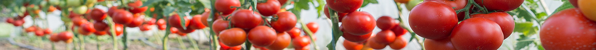
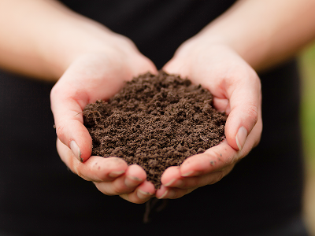
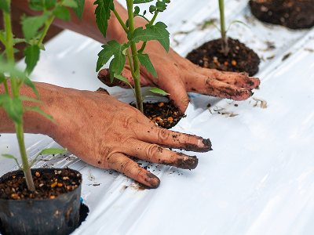
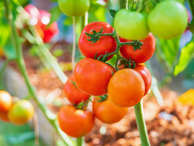

私たちが何より大切にしているのは、自然の力を生かした「有機栽培」です。
土の中の微生物の力を借りて、じっくり、たくましく。トマトが本来持つ生命力を引き出すよう、毎日手間暇をかけて育てています。
皆さまに安全・安心なトマトをお届けできるよう、私たちは全てのトマト栽培で有機JAS認証を取得しています。食べる人の健康はもちろん、地域の豊かな環境を未来へ繋ぐため、私たちのこだわりと責任の証です。

私たちのトマト作りの土台となるのは、目に見えない微生物たちの力です。厳選した有機堆肥をじっくりと時間をかけて発酵させ、土の中の生態系を豊かに整えています。微生物が耕してくれた豊かな土からトマト自身が根を伸ばし、力強く育つ環境を整えています。

毎日の手作業による管理を何より大切にしています。病気や害虫のリスクを未然に防ぐため、一株一株の葉の状態や土の乾き具合をチェックし、細やかな温度・水分調整を行っています。トマトの甘みと旨みを引き出すための、妥協のない手仕事です。
